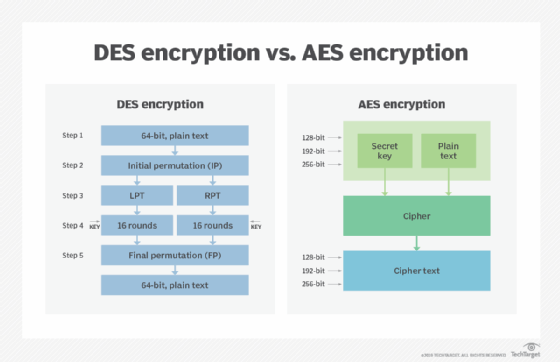
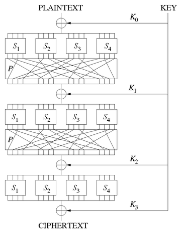
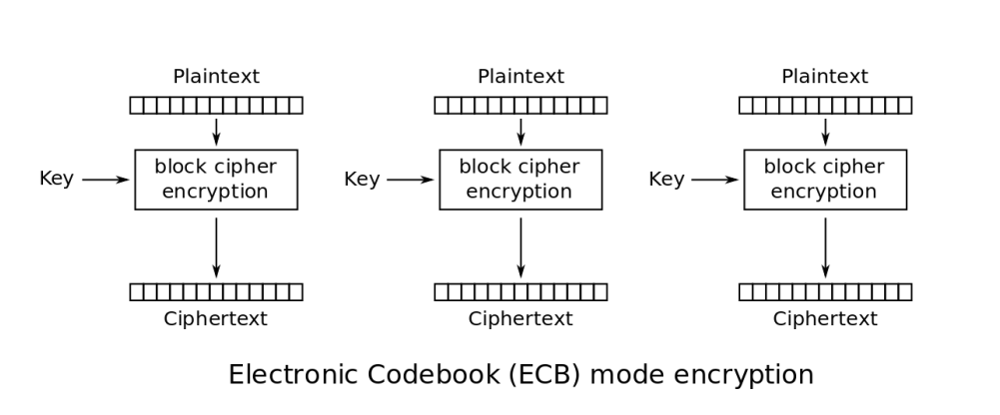
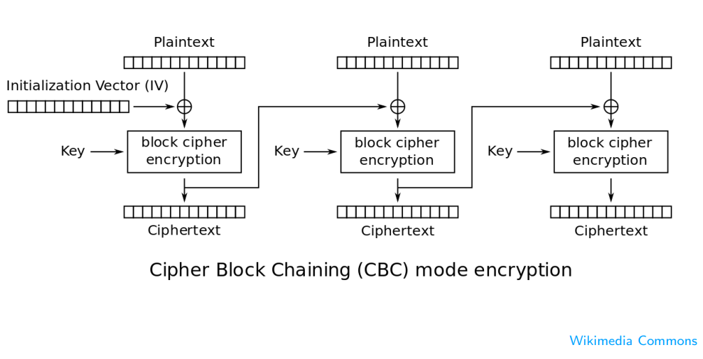
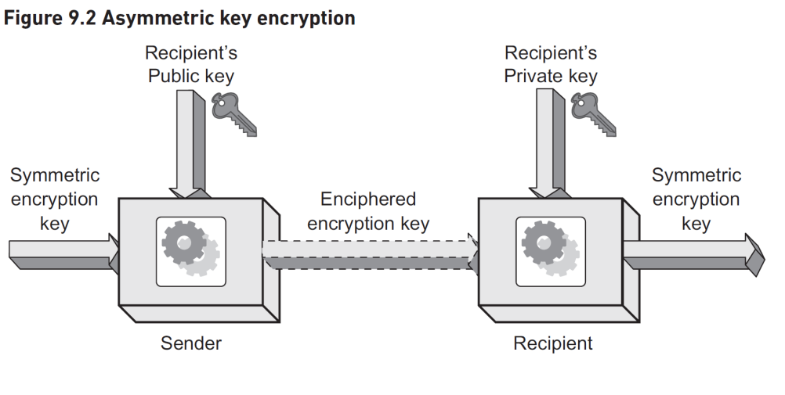
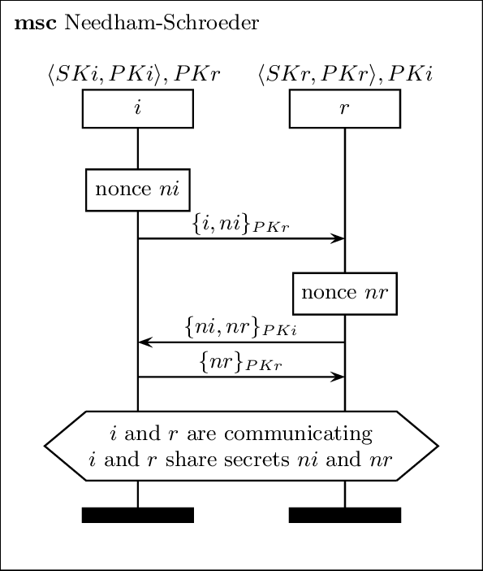
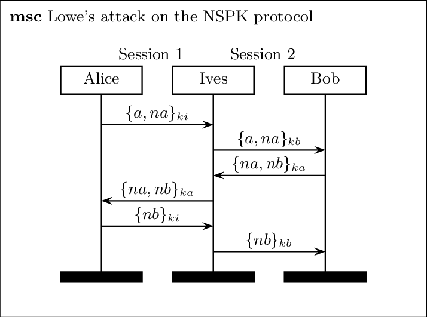

The image above illustrates the concept of Symmetric Key Encryption, a fundamental cryptography method where a single key is used for both encryption and decryption of messages. The sender uses the key to encrypt plaintext into ciphertext, which is then transmitted securely to the recipient. Upon receipt, the same key is used to decrypt the ciphertext back into plaintext. Symmetric key encryption is widely used due to its efficiency, especially for large amounts of data. However, it requires that both the sender and recipient securely share and maintain the secrecy of the key.
Advanced Encryption Standard (AES)

Understanding AES
The Advanced Encryption Standard (AES) is a widely used encryption algorithm essential for securing internet browsing and mobile communications. It was developed to replace the older DES (Data Encryption Standard) and 3DES algorithms due to their vulnerabilities to quick cryptographic breaks. AES is based on the Rijndael cipher, developed by cryptographers Vincent Rijmen and Joan Daemen, and was selected by the National Institute of Standards and Technology (NIST) as the standard in 2001. AES operates on a substitution-permutation network (SPN) that provides a robust security framework, making it a reliable choice for modern encryption needs.
Substitution-Permutation Networks (SPNs)

Substitution-Permutation Network
The image illustrates a Substitution-Permutation Network (SPN), a complex structure used in block cipher algorithms. SPNs are based on the two primitive cryptographic operations of substitution and permutation. The process begins with the input plaintext being processed through several rounds of substitution (S-boxes) and permutation (P-boxes). In the substitution step, small blocks of bits are substituted according to a substitution table. This step is designed to provide confusion, which obscures the relationship between the ciphertext and the symmetric key. Following substitution, a permutation step rearranges the bits, providing diffusion, which dissipates the statistical structure of the plaintext over the entirety of the ciphertext. Each round applies these operations using a subkey derived from the original encryption key (shown as K0, K1, K2, ...), and after multiple rounds, the final permutation produces the ciphertext. This layered approach ensures a highly secure transformation that is resistant to cryptanalysis.
Electronic Codebook (ECB) Encryption

Electronic Codebook (ECB) Mode Encryption
The diagram above displays the Electronic Codebook (ECB) mode of encryption, which is the simplest form of block cipher encryption. In ECB mode, each block of plaintext is encrypted separately with the same key. This approach is straightforward and allows for parallel processing, making it efficient. However, because identical blocks of plaintext are always encrypted into identical blocks of ciphertext, it may reveal patterns in the plaintext, which can be a security vulnerability. For this reason, ECB is generally not recommended for encrypting large amounts of data where such patterns could be discernible.
Cipher Block Chaining (CBC) Encryption

Cipher Block Chaining (CBC) Mode Encryption
The diagram represents Cipher Block Chaining (CBC) mode, a commonly used encryption mode that provides improved security over Electronic Codebook (ECB) mode. In CBC mode, each block of plaintext is XORed with the previous ciphertext block before being encrypted. This process requires an initialization vector (IV) to commence the encryption of the first block. The use of an IV ensures that identical blocks of plaintext encrypt differently, thereby preventing the leakage of patterns in the plaintext. This encryption mode is widely used because it conceals plaintext patterns and is suitable for encrypting data of any size, particularly in secure communications where data patterns must be protected.
Asymmetric Key Encryption

Figure 9.2 Asymmetric Key Encryption
The image portrays an asymmetric cryptosystem, which is fundamental to modern cryptography. Unlike symmetric key algorithms, asymmetric encryption uses a pair of keys: a public key and a private key. The public key, which can be shared openly, encrypts the plaintext, while the private key, kept secret by the recipient, is used for decryption. This system underpins various security protocols, allowing confidential information to be transmitted over insecure channels. Asymmetric key encryption is also the cornerstone of digital signatures and certificates, verifying the authenticity of the sender and the integrity of the message.
The Mathematics of Asymmetric Cryptography
Exponentials and Modular Arithmetic
In asymmetric cryptography, we often deal with large numbers. Here's how some basic calculations are done:
Exponentiation: Calculators or computer programs like Python can handle large exponentials: pow(3, 5) in Python calculates \(3^5\).
Modular Arithmetic: This is like clock arithmetic. The modulo operation finds the remainder after division of one number by another. In Python, 8 % 12 returns 8, and (10 + 5) % 12 returns 3.
'Textbook' RSA Algorithm
Here's how you can calculate the RSA encryption and decryption steps:
Choose Primes and Compute n: Select large primes \(p\) and \(q\) and compute \(n = p \times q\), which will be part of the public key.
Calculate Public and Private Keys: Compute \(e\) and \(d\) such that they are multiplicative inverses modulo \((p-1)(q-1)\). This can be done using the Extended Euclidean Algorithm.
Encryption: For a message \(m\), compute the ciphertext \(c\) using the public key \((n, e)\) as \(c = m^e \mod n\).
Decryption: Recover \(m\) from \(c\) using the private key \(d\) as \(m = c^d \mod n\).
Interesting Facts about RSA
Here are some interesting facts about RSA and its security:
Prime Numbers: The security of RSA relies on the difficulty of factoring the product of two large primes. There is no known efficient algorithm to factor such large numbers in a practical amount of time.
Key Size: The strength of RSA encryption is directly related to the key size. Modern RSA keys are typically 2048 bits or longer.
Quantum Computing: RSA may be vulnerable to attacks by quantum computers, which can potentially use Shor's algorithm to factor large numbers efficiently. This is why post-quantum cryptography is an active area of research.
Needham-Schroeder Public Key Protocol

Illustration of the NSPK Protocol
The diagram depicts the Needham-Schroeder Public Key (NSPK) protocol, a set of rules that allows two parties to communicate securely over an insecure channel. It's an early and influential protocol in the field of public key cryptography. The protocol uses public key cryptography to exchange secret keys that can then be used to encrypt and decrypt messages.
The protocol works as follows:
Person A sends a message to Person B encrypted with B's public key, indicating their identity and requesting a secret key for further communication.
Person B decrypts the message with their private key, creates a new secret key for the session, and sends it back to Person A encrypted with A's public key.
Person A decrypts the received message with their private key, now obtaining the secret key that both A and B know.
This protocol is foundational in understanding secure key exchange in asymmetric cryptography, ensuring that even if the communication is intercepted, an eavesdropper cannot decrypt the messages without access to the private keys.
Lowe's Attack on Needham-Schroeder Protocol

Illustration of Lowe's Attack
The image displays Lowe's Attack, a sophisticated man-in-the-middle attack against the Needham-Schroeder Public Key Protocol. This type of attack occurs when an attacker intercepts the public key messages between two parties. In the diagram:
Person A initiates a conversation with Person B, thinking they are exchanging keys securely.
An attacker, Person C, intercepts this message and forwards it to Person B, pretending to be Person A.
Person B responds with a message intended for Person A, which the attacker intercepts.
The attacker then sends a message to Person A, making them believe it is coming from Person B.
This attack shows that while the Needham-Schroeder Protocol aims to establish a secure communication channel, it can be vulnerable to interception if the key exchange is not authenticated properly. Lowe's Attack underscores the importance of not just encrypting messages but also securely verifying the identity of the parties involved in the communication.
Summary of Key Concepts in Security and Cryptography
Security and cryptography are essential fields in protecting information and ensuring secure communication. The study encompasses various encryption methods, each with unique features and security aspects:
Symmetric Encryption: A single key is used for both encryption and decryption. It is efficient but requires secure key management.
Asymmetric Encryption: Utilizes a pair of keys (public and private) for encryption and decryption, facilitating secure key distribution.
Block Cipher Modes: Techniques like ECB and CBC dictate how block ciphers process plaintext, with CBC providing enhanced security by using an initialization vector (IV).
Substitution-Permutation Networks: The foundation of many block ciphers, providing confusion and diffusion through multiple rounds of processing.
Mathematics of Cryptography: Relies on hard mathematical problems, such as factoring large numbers in RSA, for security assurances.
Protocols and Attacks: Protocols like NSPK aim to secure communications, but attacks such as Lowe's Attack demonstrate the need for vigilance and robust design.
Security protocols must not only encrypt data but also authenticate the parties involved to prevent man-in-the-middle attacks. The ongoing development in quantum computing and its potential to break current encryption standards has also led to the rise of post-quantum cryptography research, aiming to develop new algorithms that are secure against quantum attacks.
The field of cryptography is a dynamic one, constantly evolving to counteract emerging threats and adapt to new computing technologies. As such, continuous learning and adaptation are integral to maintaining robust security in digital communications.